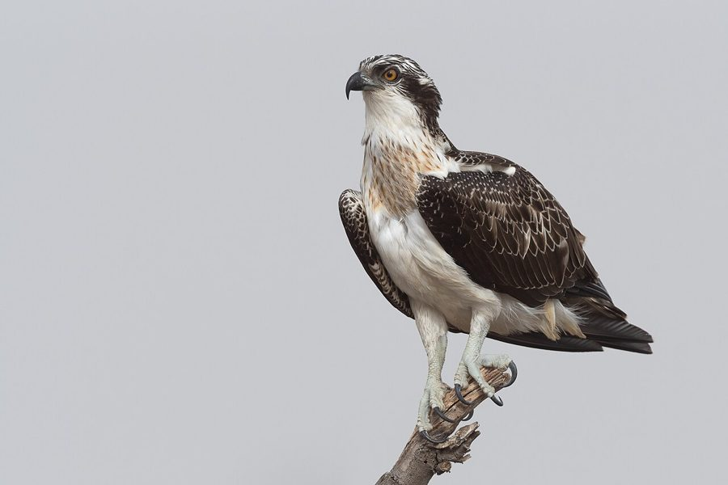

मछलीमारOsprey
Pandion haliaetus · Pandionidae · BRD-0048

- Scientific name
- Pandion haliaetus (Linnaeus, 1758)
- Family
- Pandionidae
- Hindi
- मछलीमार
- Status here
- native
- IUCN
- LC
When to look कब देखें
Expected mainly in October, November, December, January, February, March.
मछलीमार / Osprey
Pandion haliaetus (Linnaeus, 1758) — Pandionidae
मछलीमार (ऑस्प्रे) — पूर्वी उत्तर प्रदेश की प्रमुख नदियों जैसे घाघरा और राप्ती, तथा बड़े तालाबों और झीलों के आसपास पाया जाने वाला एक बड़ा, शानदार और अत्यंत विशिष्ट शिकारी पक्षी है। यह एक शीतकालीन प्रवासी (winter visitor) पक्षी है। इसे "मछली का बाज़" भी कहा जाता है क्योंकि इसका मुख्य आहार केवल मछलियाँ हैं। इसकी सबसे बड़ी पहचान इसकी सफ़ेद छाती और पेट, आँख के पीछे से निकलने वाली एक गहरी चौड़ी पट्टी (dark eye mask), और उड़ते समय इसके पंखों का विशिष्ट मुड़ा हुआ आकार (M-shape profile) है। यह एकमात्र ऐसा शिकारी पक्षी है जो पानी में कई फीट की ऊंचाई से पैरों के बल सीधे नीचे की ओर गोता लगाता है (plunge-diving) और पूरी तरह पानी में डूबकर मछली पकड़ लेता है। इसके पंजों के नीचे विशेष नुकीले उभार (spiny pads) और एक घूमने वाला बाहरी पंजा (reversible outer toe) होता है, जो इसे चिकनी और फिसलने वाली मछलियों को मजबूत पकड़ के साथ पानी से बाहर निकालने में मदद करता है।
Quick Identification त्वरित पहचान
| Feature | Description |
|---|---|
| Size | Large raptor (52–60 cm total length); wingspan is around 150–170 cm |
| Colouration | Dark brown upperparts; pure white underparts with a brown breast-band ("necklace") |
| Head Pattern | White head with a prominent dark brown band running through the eye and down the neck |
| Flight Profile | Long, relatively narrow wings held with a distinct bend at the carpal joint (like a shallow 'M' or 'W') |
| Hunting Action | Circles high over water, hovers briefly, then plunges feet-first, often submerging completely |
| Feet Adaptation | Large, heavily curved claws; bare blue-grey tarsi; spiny spicules on the soles of feet |
Field tip: Look along the channels of the Ghaghra River during winter. Watch for a very large, dark and white bird hovering high above the water, which then suddenly closes its wings and dives straight down into the river with a huge splash. The female is larger than the male and is shown in the field tip.
Morphology आकारिकी
Biometrics (typical measurements in the northern Indian plains showing reverse sexual size dimorphism):
| Measurement | Range |
|---|---|
| Total length (Male) | 500–560 mm |
| Total length (Female) | 550–640 mm |
| Wing (Male) | 460–495 mm |
| Wing (Female) | 485–520 mm |
| Tail (Male) | 190–210 mm |
| Tail (Female) | 205–230 mm |
| Tarsus (Male) | 52–57 mm |
| Tarsus (Female) | 55–60 mm |
| Bill (Male) | 32–36 mm |
| Bill (Female) | 34–38 mm |
| Weight (Male) | 1100–1600 g |
| Weight (Female) | 1400–2000 g |
Plumage: The upperparts are uniform deep chocolate-brown. The crown and forehead are white, heavily streaked with brown. A dark brown mask extends from the lores, through the eye, to the sides of the neck. The underparts are clean white, except for a distinct band of brown streaks across the upper breast, which is more pronounced in females. The underwing coverts are white with dark brown wrist patches, and the flight feathers are barred with grey and black.
Bare parts: The hooked bill is black with a blue-grey cere. The irises are bright golden-yellow. The legs and feet are pale blue-grey or greenish-grey. The talons are extremely long, sharp, and black.
Vocalisations
Generally quiet during their winter migration in eastern UP.
- Alarm call: A series of sharp, piping whistles, cheep-cheep-cheep or yip-yip-yip, uttered when other large eagles approach its feeding perch.
- Contact call: A high-pitched, thin whistle, tseee-tseee, repeated slowly.
Behaviour & Ecology व्यवहार और पारिस्थितिकी
- Hunting style: A highly specialized piscivore. It flies slowly at heights of 10 to 40 metres above water, searching for fish. It hovers momentarily before dropping into a steep, feet-first dive. It can submerge up to a metre deep, using its powerful wings to fly out from the water surface with its prey.
- Prey alignment: When flying with a fish, it always aligns the fish head-forward in its talons to reduce aerodynamic drag in mid-air.
- Perching: Perches on high, exposed branches of dead trees or sandbars near riverbanks to consume its catch, holding the fish with one foot and tearing flesh with its bill.
Life Cycle / Phenology जीवन चक्र
- Breeding: Does not breed in Uttar Pradesh. The wintering population breeds in northern Europe and northern Asia (Siberia) from May to August.
- UP migration calendar: Arrives in the Basti district by mid-October as water levels in rivers recede. They establish winter hunting territories and remain until late March, after which they migrate north.
- Nesting in breeding range: Builds a massive nest of sticks high up in pine trees, on rocky cliffs, or on man-made platforms near water, reusing the nest year after year.
Host Plants or Prey आहार
Primary food items:
- Fish: Feeds almost exclusively on live fish. Key prey in Basti includes carps (such as Rohu Labeo rohita and Catla Catla catla), Snakeheads (Channa species), Wallago (Wallago attu), and large barbs. It rarely takes other prey unless fish are completely unavailable.
Predators / Natural Enemies शत्रु
- Larger raptors: Large resident eagles, such as Pallas's Fish Eagle (Haliaeetus leucoryphus), harass Ospreys to steal their caught fish (kleptoparasitism) and can occasionally kill wintering Ospreys.
- Human impact: Poaching on fish farms and entanglement in fishing nets are primary causes of mortality.
Agricultural / Human Relevance कृषि प्रासंगिकता
Conflict with fish farmers. Because they occasionally hunt in commercial fish breeding ponds (talab), Ospreys face conflict with local fish farmers, who sometimes set thin nylon nets over ponds to deter or capture them.
Conservation and legal status: Protected under Schedule IV of the Wildlife Protection Act, 1972. It is illegal to hunt, capture, or disturb Ospreys. Siltation of rivers, water pollution that reduces fish visibility, and illegal pond netting are key threats.
Expected Locally स्थानीय रूप से अपेक्षित
Not a field record. Written from published accounts for eastern Uttar Pradesh. No confirmed local sighting yet — if you have seen it, that is what the atlas needs.
अभी तक स्थानीय पुष्टि नहीं। यह विवरण प्रकाशित स्रोतों से है, किसी अवलोकन से नहीं।
Spotted regularly during the winter months along the wide channels of the Ghaghra River near Ayodhya and Basti borders. They can also be observed near large reservoir systems and fish nurseries in the Basti block. They are frequently seen perched on high bamboo posts erected by fishermen in the river channels.
Distribution वितरण
Global range: A cosmopolitan species found on all continents except Antarctica. Breeds in northern latitudes and migrates to tropical regions for wintering.
In India: A widespread winter visitor to all major rivers, lakes, reservoirs, and coastal waters.
In Uttar Pradesh: Regular winter visitor along all major river channels and wetland sanctuaries.
In Basti district / eastern UP: Regularly recorded along the Ghaghra and Rapti rivers and large oxbow lakes from October to March.
Research Questions शोध प्रश्न
Anyone can investigate these | कोई भी इन प्रश्नों की जाँच कर सकता है
- What is the average duration of an Osprey's dive sequence from hover to splashdown in the Ghaghra River? — Record dive times and heights using simple stopwatches.
- What percentage of Osprey dives in Basti result in a successful fish capture? / घाघरा नदी में मछलीमार (ऑस्प्रे) के गोता लगाने की सफलता दर का प्रतिशत क्या है? — Track dive attempts and successful catches.
- What species of fish are most commonly captured by Ospreys in Basti's commercial ponds? — Identify prey species from feeding perches.
- How do Ospreys react when chased by resident Pallas's Fish Eagles? / जब स्थानीय मछली बाज ऑस्प्रे का पीछा करते हैं, तो ऑस्प्रे अपने शिकार को बचाने के लिए क्या करता है? — Document flight evasions and food dropping rates.
- Does the presence of nylon nets over village fish ponds significantly deter Osprey hunting activity in the surrounding area? — Compare search patterns near netted versus open ponds.
Similar Species मिलती-जुलती प्रजातियाँ
| Species | Key Difference | हिंदी |
|---|---|---|
| Brahminy Kite (Haliastur indus) | Chestnut body; lacks white underparts and dark eye mask; does not plunge-dive completely into water | ब्राह्मणी चील — लाल-भूरा शरीर, पानी की सतह से शिकार उठाना |
| Pallas's Fish Eagle (Haliaeetus leucoryphus) | Much larger; completely dark brown body with a pale golden-sand head; lacks white underparts | बड़ा मछलीमार बाज — बड़ा आकार, मटमैला सिर |
| Black Kite (Milvus migrans) | Forked tail; lacks white plumage; scavenger of refuse, does not plunge-dive | चील — दो-शाखी पूँछ, मुख्य रूप से अपशिष्ट भक्षक |
Field rule: Very large raptor with a dark eye mask on a white head, pure white underparts with a streaked breast-band, flying with bent 'M'-shaped wings near rivers, and diving feet-first into water is an Osprey.
Taxonomy & Classification वर्गीकरण
Original description. Carl Linnaeus described the Osprey as Falco haliaetus in 1758 in his Systema Naturae (ed. 10, vol. 1, p. 91). The type locality was Sweden. Marie Jules César Savigny placed it in the monotypic genus Pandion in 1809. The genus name Pandion is named after the mythical Greek king Pandion of Athens. The specific name haliaetus comes from the Ancient Greek hali-+aetos, meaning sea-eagle.
Subspecies. Four subspecies are recognized globally. The nominate subspecies visiting UP is:
| Subspecies | Authority | Range | Notes |
|---|---|---|---|
| P. h. haliaetus | (Linnaeus, 1758) | Palearctic region; winters in Africa and South/Southeast Asia | UP subspecies; nominate form; larger than the American subspecies P. h. carolinensis |
Family and order placement. Placed in the order Accipitriformes, family Pandionidae. Unlike other raptors, the Osprey is unique enough to be placed in its own family (Pandionidae), of which it is the sole member.
Phylogenetic notes. Genetic data confirms that the family Pandionidae represents a distinct evolutionary lineage that diverged early from the rest of the Accipitriformes (hawks and eagles).
IUCN status rationale. Listed as Least Concern (LC). The global population is very large and expanding, showing significant recoveries in Europe and North America following bans on organochlorine pesticides like DDT.
Photo Gallery फोटो गैलरी
References संदर्भ
- Linnaeus, C. (1758). Systema Naturae. Tenth Edition. Holmiae, p. 91. [original description]
- Ali, S. & Ripley, S. D. (1999). Handbook of the Birds of India and Pakistan. Vol. 1. Oxford University Press, New Delhi.
- Grimmett, R., Inskipp, C. & Inskipp, T. (2011). Birds of the Indian Subcontinent. 2nd ed. Christopher Helm, London.
- Poole, A. F. (1989). Ospreys: A Natural and Unnatural History. Cambridge University Press, Cambridge.
- BirdLife International (2024). Pandion haliaetus. IUCN Red List of Threatened Species. Ver. 2024.
- GBIF Occurrence Data — Pandion haliaetus, Uttar Pradesh (2010–2025).
Source file: species/fauna/birds/osprey.md